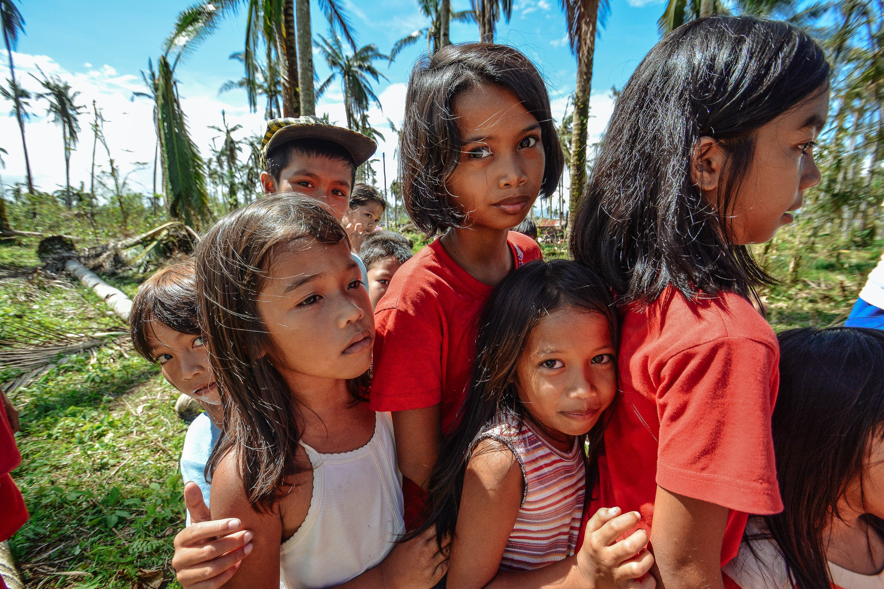
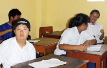
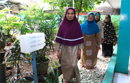

KEGIATAN KAMI
Hanya dengan mengharap ridho Allah dan ikhtiar yang kuat, Insya Allah berbagai jenis kegiatan yang akan, sedang dan telah kami lakukan, berupaya untuk mewujudkan Visi & Misi Dakwah baik berupa pembangunan Masjid, Sekolah, Media public dan sebagainya.

Panti Asuhan
Tempat tinggal bagi anak-anak yatim piatu, anak telantar, dan anak-anak dari keluarga tidak mampu, dengan fasilitas pendidikan formal serta berbagai kegiatan lainnya (pendidikan non-formal).
Lihat Detail

SLB B dan C
Sekolah bagi anak-anak cacat bisu, tuli, dan keterbelakangan mental, yang disediakan untuk keluarga tidak mampu.
Lihat Detail

Pusaka XI
Kegiatan bagi para lanjut usia dhuafa yang bertempat tinggal di sekitar Yayasan Amal Mulia Indonesia. Para nenek kakek datang berkegiatan bersama setiap Sabtu pagi. Kegiatan-kegiatan yang dilaksanakan antara lain: senam lansia, pemeriksaan kesehatan, pengajian, pemberian makanan bergizi, pemberian beras dan sembako, dan lain sebagainya.
Lihat Detail